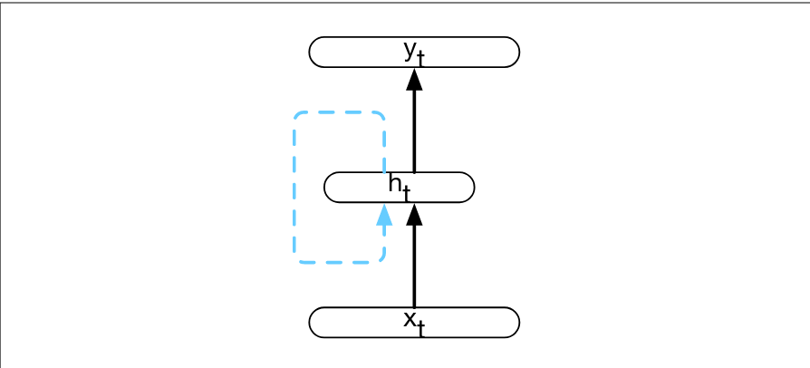

Sequence processing with RNN
Note: this is an extension and more in depth version of the Recurrent neural networks note
TLDR: a recurrent neural network is a standard Neural networks where we apply the same network (sharing weights too) a number of times and values of the previous computation are, then, feed in the network again to compute the desired output. 
In more mathematical terms, we can express a recurrent neural network as: is called the state of the layer and, usually, an initial state is given. In the previous example, f can be interpreted as the activation function (like the softmax).
At training time, we feed the RNN with the input all at once. After the net has computed the output, we could decide to:
- Feed the correct successive token no matter the output of the network (teacher reinforcing technique)
- Feed the output predicted by the network
The first method is proven to be more effective.
Bidirectional RNN
In the cases where the context "following" the current input is also important, we can use bidirectional RNNs where we use also the content to the right as well as context.
Vanishing gradient problem
When the input sequence is very large, the network won't learn to save the "old" context and will forget the start of the sequence. This is due to the fact that the gradient value will have smaller values for old input and bigger value for more recent ones.